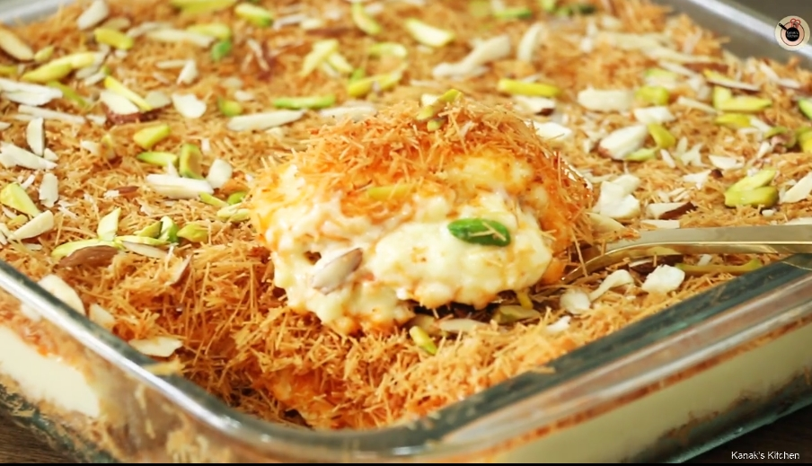

Nobabi Shemai recipe

This is my favorite dessert!
10 quick easy steps to making a delicious mouth watering dessert!
try it at home!
INGREDIENTS
- 2 tbsp ghee
- 1 tbsp raisins
- 1½ tbsp pistachio
- 1½ tbsp almonds
- 200 gm lachcha semai (fine vermicelli)
- 4 tbsp sugar
- 4 tbsp milk powder (2x)
- 3 cups of milk
- ½ cup condensed milk
- ½ cup custard powder + ½ cup milk
INSTRUCTIONS
- Firstly, in a pan, put in ghee, raisins, pistachios and almonds - stir, and toast until light brown.
- Use a spatula to take out the toasted mixture, and place it onto a plate on the side.
- In the same pan, add in the lachcha semai, sugar, and milk powder; stir the 3 ingredients together thoroughly and let it fry until light brown, then let it cool.
- Put the semai into a dish (it is ready to be used later).
- In a different pan, pour in 3 cups of milk and stir continuously so that it reduces to half of its original quantity.
- After that, add in milk powder, followed by condensed milk - use a spatula to mix everything together well, and continuously.
- In a separate small jug, put custard powder in with milk, mix together, then put it into the bigger milk pan - mix and cook until it thickens.
- Next, get the semai dish and pour the milk custard mixture on top of the semai - sprinkle semai on top of the custard too.
- Then, sprinkle the previously toasted raisins, pistachios and almonds on top.
- Place the bowl/dish in the refrigerator - let it refrigerate overnight.
- Your mouth watering creamy nawabi semai is now ready to be served!